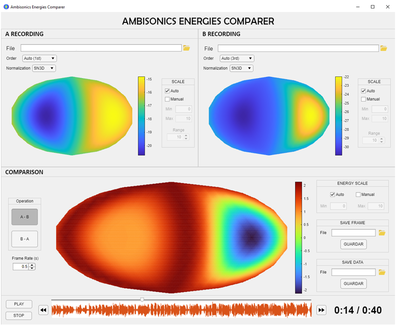

Ambisonics Energies Comparer

Ambisonics Energies Comparer is an app to compare two different Ambisonics signals, up to seventh order, in a visual way. Both signals, loaded as wav files, will be drawn by their energy distribution in an azimuthal equal-area projection: the Hammer projection.